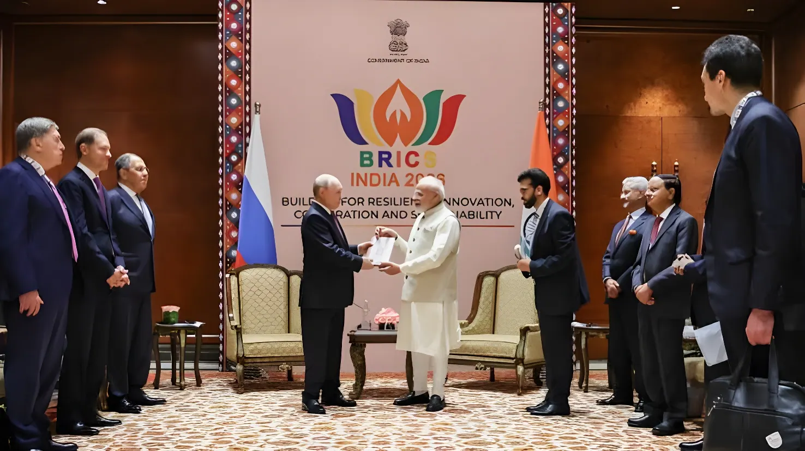

Les 12 et 13 septembre 2026, l'Inde accueille à New Delhi le 18e sommet des BRICS+, qui réunit les dirigeants d'un groupe désormais élargi à onze membres à part entière et à une dizaine de pays partenaires. Organisée sous la présidence indienne autour du thème « Bâtir pour la résilience, l'innovation, la coopération et la durabilité », cette rencontre se tient dans un climat de vives tensions internationales — guerre en Ukraine, conflit lié à l'Iran, rivalités commerciales — qui fragilisent la capacité du bloc à s'accorder sur une position commune.
Le sommet s'ouvre le 11 septembre avec le Forum des affaires des BRICS, où le Premier ministre indien Narendra Modi s'adresse aux milieux économiques du bloc, avant l'arrivée des chefs d'État et de gouvernement les 12 et 13 septembre au centre de conventions Bharat Mandapam, à New Delhi. La séance plénière du dimanche, intitulée « Résilience, innovation, coopération et durabilité : construire l'avenir pour une croissance mondiale inclusive », doit s'achever par l'adoption d'une déclaration commune, la « Déclaration de New Delhi ». Pour encadrer l'événement, les autorités indiennes ont mis en place un dispositif de sécurité exceptionnel : écoles et administrations fermées le 12 septembre dans la capitale, dizaines d'axes routiers temporairement bloqués et ministres invités à circuler en bus groupés plutôt qu'en cortèges individuels.
Le président russe Vladimir Poutine a atterri le 11 septembre à la base aérienne de Palam, près de New Delhi, pour un entretien avec Narendra Modi centré sur la diversification de relations économiques déjà portées à un niveau record par les importations indiennes de pétrole russe. La venue du président chinois Xi Jinping, sa première en Inde depuis 2019, revêt une portée particulière : elle intervient après des années de vives tensions bilatérales consécutives aux affrontements meurtriers de 2020 à la frontière himalayenne, et une rencontre avec Modi est attendue en marge des travaux. Mais c'est la guerre autour de l'Iran qui domine les discussions en coulisses : selon Reuters, ce conflit a perturbé le trafic dans le détroit d'Ormuz et fait grimper les cours du pétrole au-dessus de 100 dollars le baril, tandis que les Émirats arabes unis ont suspendu en août leurs échanges avec Téhéran après avoir été visés par des tirs de missiles iraniens. Ces divergences avaient déjà empêché les ministres des Affaires étrangères des BRICS+, réunis à New Delhi en mai, d'adopter un texte commun.
Premier sommet du groupe, encore appelé BRIC, à Ekaterinbourg (Russie) : Brésil, Russie, Inde et Chine formalisent une coopération esquissée par l'acronyme inventé en 2001 par l'économiste Jim O'Neill.
L'Afrique du Sud rejoint le groupe, qui devient BRICS et tient son premier sommet à cinq membres à Sanya, en Chine.
À Johannesburg, le 15e sommet acte un élargissement inédit : l'Iran, l'Égypte, l'Éthiopie, l'Arabie saoudite et les Émirats arabes unis sont invités à rejoindre le bloc (l'Argentine décline).
Premier sommet élargi, à Kazan (Russie), avec la nouvelle catégorie des « pays partenaires » des BRICS+.
L'Indonésie devient le onzième membre à part entière des BRICS, sous la présidence brésilienne du groupe.
Dix-huitième sommet, à New Delhi : l'Inde assure sa quatrième présidence du groupe, après celles de 2012, 2016 et 2021.
Popularisé en 2001 par l'économiste Jim O'Neill pour désigner quatre économies émergentes à la croissance rapide, l'acronyme BRIC est devenu en 2009 une organisation politique à part entière, puis BRICS avec l'entrée de l'Afrique du Sud. L'élargissement décidé à Johannesburg en 2023, suivi de l'adhésion de l'Indonésie en 2025, a profondément changé la nature du groupe : en réunissant plusieurs des plus grands exportateurs mondiaux de pétrole (Russie, Arabie saoudite, Émirats arabes unis, Iran) et deux des plus grands importateurs (Inde, Chine), les BRICS+ pèsent désormais sur une part significative des échanges énergétiques mondiaux, tout en revendiquant le rôle de porte-voix du Sud global face aux institutions dominées par les pays occidentaux.
« Ce conflit sera la principale ligne de fracture lors de ce sommet. »
— Harsh V. Pant, Observer Research Foundation, cité par France 24Le président brésilien Luiz Inácio Lula da Silva, retenu par un agenda intérieur chargé, est le grand absent de cette édition et se fait représenter par son ministre des Relations extérieures, Mauro Vieira. À l'inverse, le secrétaire général des Nations unies, António Guterres, participe aux travaux pour plaider la réforme du Conseil de sécurité et des institutions financières internationales, une revendication de longue date des BRICS+. Plusieurs dirigeants de pays partenaires ou invités sont également attendus à New Delhi, parmi lesquels le Sud-Africain Cyril Ramaphosa, l'Égyptien Abdel Fattah al-Sissi, l'Indonésien Prabowo Subianto et le Biélorusse Alexandre Loukachenko.
| Édition | Année | Pays hôte | Fait marquant |
|---|---|---|---|
| XVe | 2023 | Afrique du Sud | Décision d'élargir le groupe à six pays |
| XVIe | 2024 | Russie (Kazan) | Premier sommet élargi |
| XVIIe | 2025 | Brésil (Rio de Janeiro) | Absence inédite de Xi Jinping |
| XVIIIe | 2026 | Inde (New Delhi) | Indonésie 11e membre, guerre liée à l'Iran au menu |
En trois ans, les BRICS sont passés de cinq à onze membres à part entière, doublant presque leur poids démographique et économique affiché. Mais cet élargissement rapide a aussi multiplié les lignes de fracture internes, de l'opposition entre l'Iran et les Émirats arabes unis à l'absence remarquée du président brésilien, en passant par l'équilibre délicat que l'Inde s'efforce de maintenir entre son ancrage dans le groupe et ses relations avec Washington. Le sommet de New Delhi illustre ainsi un paradoxe qui pourrait bien définir l'avenir du bloc : plus les BRICS+ gagnent en poids sur la scène mondiale, plus il leur devient difficile de parler d'une seule voix.